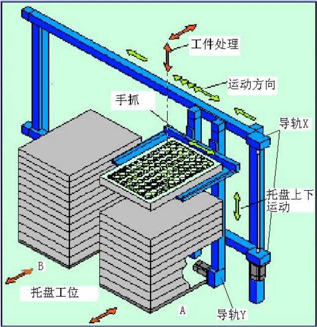

拓展与提高6——码垛机器人介绍
在很多产品的生产过程中，用机器人来完成一些生产工序，不仅能提高生产效率，降低成产成本，而且能进一步提高产品质量。例如在唇膏生产过程中，要把唇膏和外壳从托盘中取出，再把唇膏整洁正确的装入壳内，并盖好盖及拧紧，最后把成品唇膏放进另一托盘中。还有在很多手机生产过程中，在一个托盘上整洁的放置一些装有手机外壳、印刷电路板、用塑料袋包装好的显示部件。机器人手爪把它们一个一个地抓取到传送带上，以便进行下一步处理，并在最后把已经空的托盘搬到空托盘摞上。码垛机器人被广泛应用在医药行业、包装行业、仪表装配、继电器生产等众多行业。本文先简介与其工作原理非常类似的直角坐标机器人，再介绍标准的码垛机器人及其应用案例。
一、直角坐标机器人
直角坐标机器人主要由几个直线运动轴组成，通常分别对应直角坐标系中的X轴，Y轴和Z轴。在大多数情况下直角坐标机器人的各个直线运动轴间的夹角为直角，通常X和Y轴是水平面内运动轴，Z轴是上下运动轴。直角坐标机器人的核心部件是直线运动单元（简称直线导轨），它是由精制铝型材、齿形带、直线运动滑轨和伺服电机等组成，作为运动框架和载体的精制铝型材，其截面形状均采用有限元分析法进行优化设计，从而进一步保证了其机械强度和直线度，滑动导轨系统是由轴承光杠和运动滑块组成，传动机构可根据不同精度要求采用齿形带、齿条或滚珠丝杠。
利用直线运动单元可以组合出各种多维机器人，按其结构形式有30多种二维和三维机器人，还可以在Z轴上加上一个到两个旋转轴，构成四维和五维机器人。多维机器人按特定的组合构成完成特定功能的机器人或机器人组合。码垛机器人是最常见的一种，以形成多种标准形式的码垛机器人。
二、码垛机器人结构
德国百格拉公司在20年的应用中形成了一些标准化系列码垛机器人。这类码垛机器人主要用于在自动化生产过程中执行大批量工件的搬运，加工处理及转移等任务。每个码垛机器人有两摞或三摞托盘，每摞托盘的数目和尺寸随应用而定。下面以WMS型机器人为例来加于分析和介绍。
上图中，A摞托盘中最上层的那个托盘被抬起并移动到水平位置，此时托盘及部件的装载或卸载位置可以通过自由编程来实现，一个托盘里的工件处理后被放回原处，当然也可以放到另一位置。下面描述其原理性工作过程，首先用传送带或手推车把一摞托盘送到A位置，A摞托盘存放要处理的工件。通过工装使A摞托盘精确定位，手爪（Gripper）在导轨Y轴的带动下下降到最上面拖盘位置，手爪合抓紧拖盘，然后升高到固定高度后停止。此时由另外一台2维XZ轴机器人对托盘里的工件进行处理。 通常是取出工件到另一个工作位置上进一步处理，处理完毕后再放回拖盘里原来的位置。 待整个拖盘里的工件全处理完后，这时导轨X轴移动，将处理完的托盘送到B摞托盘位置，下降后放开B摞托盘最上面，然后原路返回，往抓取A摞托盘下一个待处理的托盘。从第一个托盘被处理完毕，然后送到B处，返回，再到A处抓取第二个待处理的托盘，上升到对其可以进行处理的位置，这个过程就是拖盘交换过程，用时要小于10秒。整个过程可以对导轨X轴、Y轴的运行速度、加速度进行设置，降低导轨X轴、Y轴的运行时间，以进步效率，同时还可沿导轨X方向安装传输带，组成流水线模式，从而大大进步生产效率。为图1配套的二维机器人由一个X轴和一个Z轴组成，简称XZ机器人。在XZ机器人工作中，码垛机器人的X轴要配合其工作。XZ机器人仅可以抓取一排或几排工件，每抓完一排或几排工件，码垛机器人的X轴就要移动，使XZ机器人仅可以抓取另一排或另几排工件。如此重复到抓取完整个拖盘的工件。
三、技术规格：
| 技术规格/型号 | WMS 400 WMS 600 WMS 800 |
|---|---|
| 托盘交换时间（s） | 10 10 10 |
| 托盘负载总重量（Kg） | Max.5 Max.20 20-30可选择 |
| 托盘最大尺寸（mm） | 300×400 400×600 600×800 |
| 定位精度（mm） | ±0.1 ±0.1 ±0.1 |
| 总重量（Kg） | 大约250 大约300 大约350 |
| 尺寸（W×D×H）（mm） | 1120×900×1700 1320×1000×1700 1720×1200×1700 |
| 电控箱尺寸（mm） | 600×500×1600 600×500×1600 600×500×1600 |
| 提供电压（V） | 400V/50Hz/3ph 400V/50Hz/3ph 400V/50Hz/3ph |
| 供给气压（bar） | 5-6 5-6 5-6 |
| 控制系统和驱动系统 | 工控机/伺服电机 工控机/伺服电机 工控机/伺服电机 |
这是WMS标准码垛机器人的结构技术数据，也可以按需定做不同外形和尺寸的托盘，托盘也可以被旋转。可以扩展成多种码垛机器人来实现自动装载和卸载功能。托盘可以通过传送带运送也可以是通过推车来送进码垛机器人内和从中取出。X轴行程，Y轴行程和手爪尺寸及抓取能力都可以按需来设计。由于控制系统是IPC，可以方便来改动控制程序，来改变运行速度和行程等来适用新产品。
四、码垛机器人的发展前景：
现在有很多个原因，包括包装的种类、工厂环境和客户需求等将码垛变成包装工厂里一块难啃的骨头。为了克服这些困难，码垛设备的各个方面都在发展改进，包括从机械手到操纵它的软件。最近市场上对灵活性的需求不断增长，这一个趋势已经影响到了包装的多个方面，生产线的后段也不例外。零售客户，尤其是那些具有影响力的如沃尔玛一样的大型超市， 经常需要定制一些随机货盘，但是他们不得不定制每一个货盘，而货盘的形式只是偶尔会有重复。而且这类随机的货盘的高效生产是比较困难的。
对于随机货盘来说，码垛机器人是唯一的选择。尽管如此，机器人装载也面临比较多的问题，如果要以较高的速度进行生产，将更加困难重重。
一个处理随机装载的机器人码垛机需要特殊的软件，通过软件，机器人码垛机与生产线的其他部分相连接，这是个巨大的进步。
一个用来建造随机货盘的机器人能集成进工厂的仓库管理系统（WMS）。理想上，它会成为WMS的前段，与仓库软件一起协调工作，来生产混合货盘。
精密的软件同样能够满足对立即可上架货盘的需求。一般来说，这就意味着产品码垛好后，部分或者全部一次包装容器的标签都必须是朝外的。机器人码垛设备还是另外一个苛刻应用的选择：冷冻仓库内码垛。在消费商品包装领域，在一个冷冻仓库内处理箱子是最困难的工作之一。工人们不得不频繁地交替工作来保持身体暖和，这就间接的降低了工作效率并提高了劳动力成本。
在冰冻环境下，自动化的随机存取式码垛机并不是正确选择，因为大多数自动化随机存取码垛机都使用在冷库里会结冰的压缩空气管。而与自动化码垛机相比，码垛机器人的尺寸更紧凑，由于冷冻仓库中的空间十分宝贵，因此这点显得尤为重要。尽管如此，机器人在冷冻仓库中的应用也存在着一些问题。现在，一些供应商开始为冷冻仓库设计特殊的码垛机器人。
在采用码垛机器人的时候，还要考虑一个重要的事情，就是机器人怎样抓住一个产品。真空抓手是最常见的机械臂臂端工具（EOAT）。相对来说，它们价格便宜，易于操作，而且能够有效装载大部分负载物。但是在一些特定的应用中，真空抓手也会遇到问题，例如表面多孔的基质，内容物为液体的软包装，或者表面不平整的包装等等。
其他的EOAT选择包括翻盖式抓手，它能将一个袋子或者其他包装形式的两边夹住；叉子式抓手，它插入包装的底部来将包装提升起来；还有袋子式抓手，这是翻盖式和叉子式抓手的混合体，它的叉子部分能包裹住包装的底部和两边。
将基本EOAT类型进行其他的组合也是可以的。一个饮料包装商在对装满瓶子，并且收缩裹包好的瓦楞托盘进行码垛时碰到了困难，真空吸盘会把托盘上的薄膜扯下来。
五、结束语
通过以上对码垛机器人的结构和工作过程的介绍使大家能够初步了解这类机器人的应用。由直角坐标机器人组成的码垛机器人非常适合这类应用，它不仅比其它的机器人本钱低很多，而且效率更高，必将被在更多的行业被更广泛的应用。